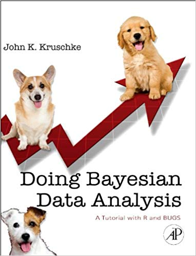

Bayesian Stats: Book Recommendations
The first time I came across Bayes’ Theorem1, I must admit I was pretty confused. It was in Introductory Statistics by Neil A. Weiss, the course book in a statistics course I was taking at the time. Neither the logic of it nor the formula for it made much sense to me. For somebody new to probability, I was still trying to figure out what the hell P(A) actually meant.
Looking back, the funny thing is that it is the branch of statistics that isn’t wont to use Bayes’ Theorem that I find confusing2. Bayesian statistics now makes perfect sense to me. Indeed, it follows human intuition (even if the formula looks weird for anybody new to probability). The probability of the hypothesis we have in mind, given the data we observe (that would be the \(P(A|B)\) part, but we can rewrite it as Pr(Hypothesis|Data); this is also called the posterior ) is… what exactly?
Well, it’s a combination of the initial plausibility of our hypothesis (P(A), also called the prior ), multiplied by what’s called the likelihood (P(B|A) or Pr(Data|Hypothesis)), which is the data we would expect to see if our hypothesis were correct. The denominator is often called the ‘evidence’ or something similarly opaque, but it is merely the numerator plus its converse, that is to say, the probability that our original hypothesis is wrong by the likelihood of our data, assuming that our hypothesis is wrong. In any case, its function is just to make sure our probabilities sum to one, as they should.
As you can see, all of those P(|) and Pr can make things confusing – underneath it all, it’s simpler. First of all, the Pr() notation and the denominator are often left out, making the theorem look more like this:
\[ \mathrm{posterior}\propto\mathrm{prior}\times\mathrm{likelihood} \]
The plausibility of our idea, now that we have seen data, is proportional to its original plausibility times the likelihood. Well, reasonably simpler, but the fact is that most people are not comfortable thinking in terms of probability. Given that Bayes’ Theorem is the basic foundation block for an entire body of statistical literature3, one can see how things could get out of hand pretty quickly – hence the need for good books on the subject. I didn’t learn any Bayesian statistics in any class I ever had, I learned everything I know from reading plenty of books, sometimes the whole way through, sometimes just certain parts until I got bored, from reading on the web, from making many mistakes in R – gradually, I found my way and built my understanding of Bayesian stats. Given that I read (or skimmed) quite a lot of books on the topic, I thought I’d share my two cents on those I came across. There are certainly many more, depending on the specific area of the sciences or on the level of technicality assumed, but these are the ones that I read and either loved, liked somewhat, got bored, or simply got lost (some of them are waaay too difficult… at least for me). Let’s dive in. They’re in no particular order, by the way.

Probably the first book that comes to mind is one of the first that I read on the topic, Simon Jackman’s Bayesian Analysis for the Social Sciences. Jackman’s book4 has a nice introduction to the topic and the first few chapters are reasonably easy to follow. However, his mathematics are detailed and even a bit pedantic (nothing wrong with that in an academic book) and things can get heavy going very quickly. Reading through derivations of the conjugacy of probability distributions convinced me I needed to a) go back and re-learn calculus again (which I did), and b) go a little further back in the tree of books on Bayesian statistics.

This led me down a few interesting paths, from de Finetti’s famous “PROBABILITY DOES NOT EXIST” statement, which I originally saw in Jackman’s book and then hunted down the original (I enjoyed the start quite a lot but then got bored), to learning JAGS to go along with Jackman’s examples, to some rather unnecessary and heavy-going books Tanner, for example). However, I decided to go the ‘source’ (in a modern context) and so I started reading Bernardo and Smith’s Bayesian Theory, which really helped to give me a solid understanding of the concepts involved. It’s a detailed read, and well recommended if you want a deeper understanding of the concepts behind Bayesian statistics.
Moving from concepts to application, I found Donald Berry’s Statistics: a Bayesian Perspective really useful for getting a grip on the basic elements. The book is a bit dated now, and is targeted at an undergraduate audience, which is actually something in its favour. Up until Kruschke and McElreath’s books (mentioned later), most Bayesian stats books seemed to be aimed at people who were already experts in statistics (or knowledgeable, at least), with the aim of convincing them why they should switch to Bayesian methods. As a result, a lot of these books dive headlong into subjects that are not appropriate for most students (see Jackman’s conjugacy discussions, above) and have the effect of turning a lot of students off the material. Berry’s book, although limited, does the opposite.
There are other statistics books that cover Bayesian ideas, such as Bolstad’s (I personally didn’t like his style) and deGroot & Schervish’s well-known book, which is a fine book, but very dry for my taste. There are also other introductory Bayesian statistics books, such as those by Lynch and Hoff, neither of which really stuck with me. Actually, most Bayesian stats books I read didn’t stick with me. (Lee also has an introductory text, but I haven’t read it.)
Sticking with introductory level, John Kruschke has a popular book with its quirky dog cover.

I came a bit late to the Kruschke party, which meant that the two biggest advantages of the book (easy explanation of Bayesian stats and pre-written R functions) were not particularly useful to me, as I was already reasonably proficient in R and understood Bayesian stats quite well. Still, his book is very popular for a reason, which shows just how prevalent the problem of ‘writing-Bayesian-stats-books-for-people-who-are-already-awesome-at-statistics’ is. However, I like to open things up and poke around, and his closed system of pre-written functions didn’t work so well for me (plus, the functions are quite badly written, in my opinion). Closed ecosystems of functions like this are a thing of the past (see Laplace’s Demon), the future is incorporating well-known methods and function calls with Bayesian machinery running under the hood (such as rstanarm). Anyway, for someone starting off, it’s a recommended read. Kruschke has some interesting papers too.
There are also some ‘classics’ of Bayesian statistics, perhaps the most well-known being the canonical Bayesian Data Analysis by Andrew Gelman & co. I don’t know what keeps me away from this book. It’s very highly regarded (pretty much as the book on Bayesian stats) and well-written, and has a section on computation with Stan etc., but I just never seem to sit down and read it. Who knows why5.

Of course, there are tons of books on this subject. I could literally fill a long blog post on the books I started and just didn’t like for whatever reason. There are some that are encyclopaedic (Congdon’s long list of Bayesian books, for example), others, designed for business students, that were just kind of ‘meh’: Marin & Robert and Rossi, for example. Others are useful for learning Bayesian methods and R, such as Jim Albert’s book, Bayesian Computation with R. This is a really useful book actually, but like I said earlier with reference to Kruschke, by the time I came to it, I was already using JAGS and on a different path and so I had no great use for Albert’s R functions. Still, it’s a well-regarded book by an acknowledged R expert. There are also good books on Bayesian econometrics (Koop) and time-series (Pole, West & Harrison, haaard) and Jeff Gill has one for the social & behavioural sciences (I really didn’t get into this); there are also many others throughout the specific fields of the sciences.

The emphasis on R is something that has carried through to the newer batch of Bayesian statistics books, which place more emphasis on the ‘data analysis’ part (that is, being empirical instead of theoretical, and getting your hands dirty with computer programming in R from the off) than on theoretical underpinnings. You will find some targeted at a Python audience, for example, Davidson-Pilon’s book, which is available as an editable github-type-webbook on the net, as well as a printed book. (Its title will tell you a bit about the Python audience it aims for – more computer programmers than the academic/statistician audience that use R. Indeed, most of the Python Bayesian analysis resources are found on the web as opposed to in books. Although some are just books on the web in pdf format.) For me personally, this is good news. I liked the theoretical knowledge that I gained from Bernardo & Smith, but once I had to delve into understanding matrix algebra (just to see a linear regression derivation) or complex characteristics of probability distributions, I was already thinking of how I’d rather have a beer. Programming, at least for me, is a perfect way to connect the theory and the concepts to the reality of actually doing some Bayesian analysis.
This brings me nicely to two books that I think really utilise this approach to good effect, one recent, one a decade or so old: Richard McElreath’s Statistical Rethinking (new) and Gelman & Hill’s Data Analysis Using Regression and Multilevel/Hierarchical Models (older). While I’ve only recently started reading McElreath’s book, it seems like exactly the type of book that I would have liked to have when I started out. No complicated mathematics, just sensible advice and a heavy emphasis on doing analysis in R. The book is well-written (and very well backed up with references, there’s a ton of information to follow-up from the endnotes if you’re so inclined) and contains lucid arguments for why the author believes we need to approach statistics from a fresh angle. Although I haven’t finished it, I do recommend it already.
It’s similar in some ways to Gelman & Hill’s book, and one can see the influence of Andrew Gelman (particularly through his emphasis on the ‘doing’ of Bayesian statistics) in Statistical Rethinking. Data Analysis Using… is likewise focused on analysis, learned through computer programming. It features both frequentist and Bayesian takes on statistical methods, and contains detailed computer code for (the now somewhat dated) BUGS language (see here for why BUGS and its cousin JAGS are not always optimal for Bayesian analysis). It also contains some sage advice for researchers: try out simple models using quick methods like lm() as you build up your model (advice that I certainly needed on at least one occasion).

So that’s my take on Bayesian statistics/data analysis books. As befits the age we live in, you’ll likely learn just as much from sites like Stack Overflow or from blog posts and RPubs and Github than you will from books. Academic papers often helped me more than books too. Still, a good book can teach you a hell of a lot in a consistent way. There are many referenced in this post, some better than others, but all have their qualities. For me specifically, someone who is not mad about reading lots of mathematics, the last two are my recommendations. For others, this will obviously be different (I know someone who loves Jackman’s book, for example).
By the way, there are some informal books on the subject, such as Nate Silver’s The Signal and the Noise, or McGrayne’s The Theory That Would Not Die. I’ve given Amazon or publisher links for all these books, bar a few, but they can be found in other places too…you know what I’m talking about. Buy the ones you like, though! 👮
Footnotes
Maybe this formula wouldn’t have made much sense to the ol’ Reverend Thomas Bayes either, since he used the Newtonian style of geometric exposition. For the history of the theorem, see McGrayne. For a history of statistics in general, including Bayes (and Laplace, who probably did much more to develop Bayesian statistics than Bayes ever did) see the fantastic Stigler.↩︎
That would be ‘frequentist’ or ‘classical’ (or ‘traditional’) statistics (take your pick of adjective). Most of the Bayesian books above will have sections comparing the traditions. McElreath doesn’t bother, which is a nice development in its own way.↩︎
Although there is only ever one core method: posterior
.↩︎ I’ve learned much more from Jackman’s various political science articles, in which he uses Bayesian methods, than this book, to be honest.↩︎
Speaking of Gelman, he has a literal treasure trove of papers and web discussions on the subject of Bayesian data analysis. See his site for many links to those.↩︎